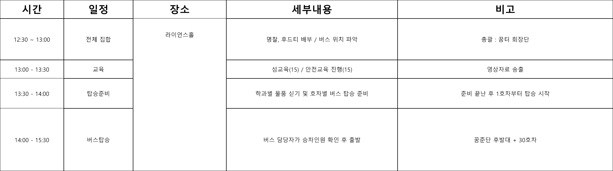

공학대학·소프트웨어융합대학 공동 주최
새내기 배움터
1,800명 규모 · 2박 3일

처음 온 신입생도 자기 자리를 찾도록
- 낯선 강당에서도 신입생이 바로 알아볼 수 있는 건 자기 학과 이름이라고 생각했습니다. 입구와 무대를 기준으로 학과별 자리를 색으로 구분하고, 모일 곳에 학과 이름을 적었습니다.
- 집결할 때는 ‘어디에 서지?’, 출발할 때는 ‘어느 차를 타지?’가 중요했습니다. 첫 안내는 배치도에 집중하고, 이동할 때 필요한 버스 번호는 별도 화면으로 준비했습니다.

1,800명의 일정과 동선을 설계한 큐시트
“이 활동이 끝나면 신입생은 어디로 가고, 그곳에서는 누가 맞아 줄까?” 큐시트를 만들 때 제가 던진 질문입니다. 참가자가 첫 집결부터 귀가까지 겪을 2박 3일을 따라가며, 두 단과대학 운영진이 함께 쓸 진행표에 65개 일정 항목을 담았습니다.
- 함께 모이는 시각에서 거꾸로 짠 일정
- 학과마다 하고 싶은 프로그램과 필요한 시간이 달랐습니다. 모두가 참여하는 행사의 시작 시각을 기준으로, 각 학과가 활동하고 다음 장소로 이동할 시간을 확보했습니다.
- 사람이 몰리는 곳을 먼저 살핀 동선
- 여러 학과가 한 입구로 모이는 구간에서는 출발 시각을 나눴습니다. 도착해서도 자기 학과를 바로 찾을 수 있도록 배치도에 학과별 대기 위치를 표시했습니다.
- 현장에서 판단할 수 있는 역할 분담
- 참가자를 보내는 사람과 맞이하는 사람이 서로 언제 연락해야 할지 정했습니다. 일정이 밀렸을 때 어느 장소로 안내할지도 적어, 현장 담당자가 바로 다음 안내를 할 수 있게 했습니다.

무대에 오르기 전, 아직 이동 중인 학생들
강당에서 사회를 맡은 제게는 무대에 오르기 전에 확인할 일이 있었습니다. 어느 학과가 아직 이동 중이고, 입구에는 누가 기다리고 있는지 운영진과 무전으로 맞췄습니다. 학생들을 강당까지 안내하고 나서야 마이크를 잡았습니다.
운영진에게 학생들을 살펴 달라고 부탁한 만큼 저도 제 몫을 맡고 싶었습니다. 낮에는 참가자들의 몸 상태를 살피고 밤에는 동료들과 불침번을 나눠 섰습니다. 마지막 날 아침, 제 구역에 남아 있는 학생이 없는지 직접 확인하는 것까지가 회장으로서 제 일이었습니다.